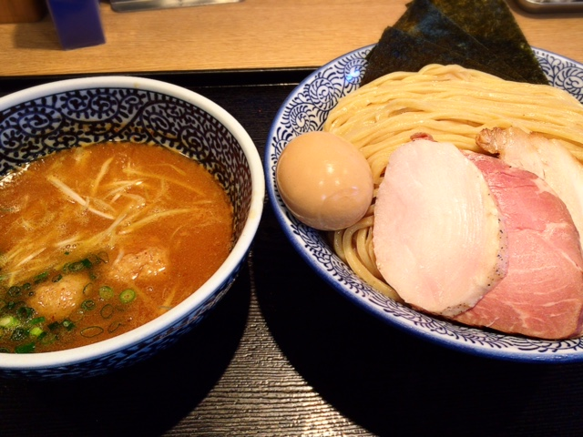
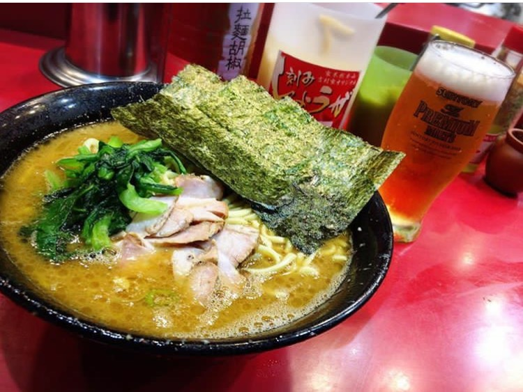
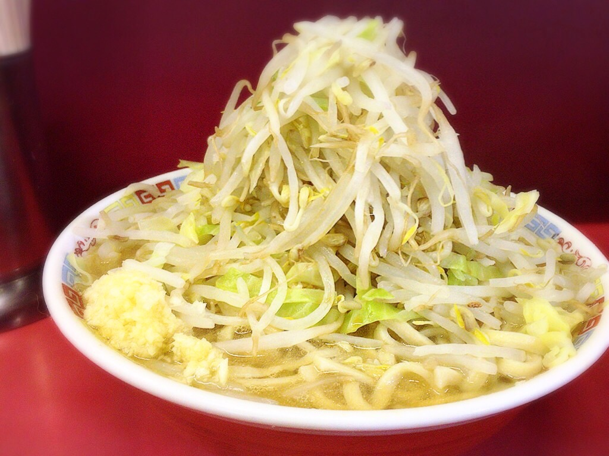
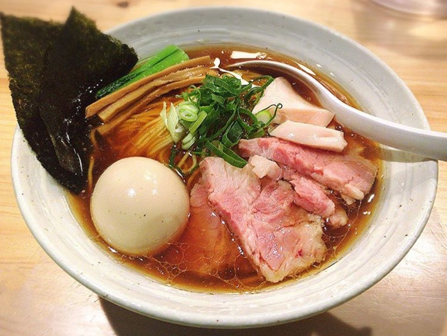
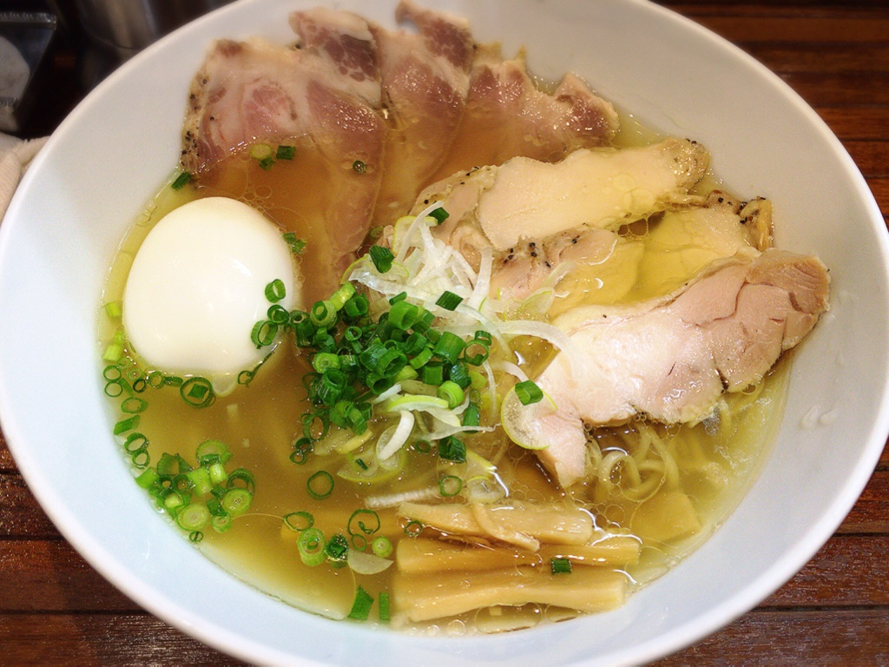
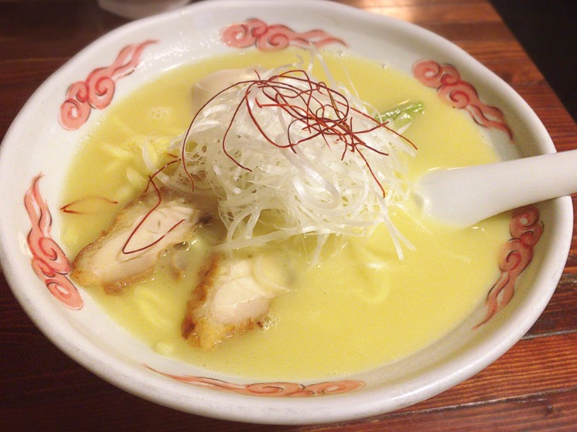

新小岩
| 麺屋 一燈 | |
|---|---|
|  | 特製濃厚魚介つけ麺 1080yen全国約51,000件のラーメン提供店の中で食ベログ評価日本一位！ラーメン界の大御所的な存在。 |
横浜
| 吉村家 | |
|---|---|
|  | ラーメン 690yen云わずと知れた、横浜家系総本山。 |
ひばりヶ丘
| ラーメン二郎 ひばりヶ丘駅前店 | |
|---|---|
|  | ラーメン（豚２） 700yenヤサイマシマシニンニクアブラカラメ！ |
三鷹
| 麺屋 さくら井 | |
|---|---|
|  | らぁ麺(醤油) 780yen丁寧な調理が生み出す、独創的な味に感動。 |
町田
| 町田汁場 しおらーめん 進化 | |
|---|---|
|  | しお全部入り 1050円yen見た目は透き通ったスープ、シンプルな塩。 |
日暮里
| 麺酒処 ぶらり | |
|---|---|
|  | 鶏白湯ラーメン 780円yen黄金色の鶏白湯ラーメン。 |